我是祥瑞，万涂幻象多维表格社区的主理人，一个深耕 飞书多维表格 的 AI 落地实践者。
3 月 11 日晚上，我们的龙虾养殖交流群里，一个叫 EaGle 的朋友发了这么一段话：
想向群主请教，obsidian-openclaw-feishu，是只能通过飞书 channel 显式调用关键词让 openclaw 存为笔记同时激活 openclaw 自己知识库索引吗？想学习下
我当时回了一句：过两天我写一篇文章。又补了一句：我们现在就是 obsidian、claude code、飞书三端都打通了。
他回：好的，期待一手。
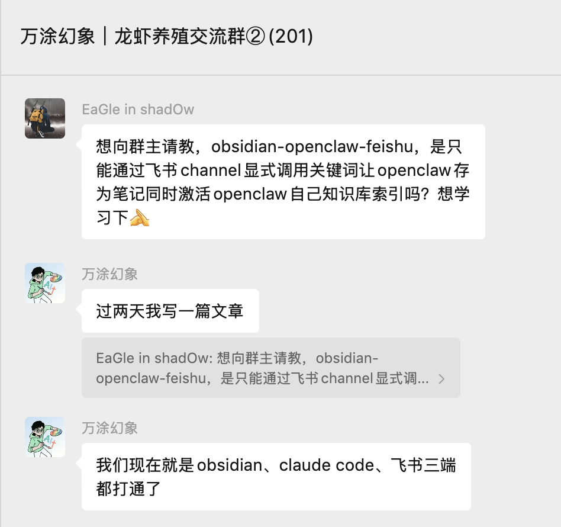
过两天没有过两天，一拖就是小半个月。
不是不想写，是每次想动笔都觉得这玩意儿太重了，一两千字根本讲不明白，可坐下来写一万字吧，又怕没人有耐心看。就这么拖着拖着，拖成了一块心病。
直到最近，很多博主开始转发 Karpathy 的本地知识库方案。
大概是这么个思路：把所有原始资料，不管是文章、论文还是笔记，全都丢进一个叫 RAW 的文件夹，让大语言模型当一个"编辑"，持续把这些原料编译成一份结构化的 Wiki。每来一份新东西，LLM 就读一遍、写摘要、更新索引、修订相关条目，顺手记一笔操作日志。真正要查东西的时候，不是去翻原始资料，而是直接在编译好的 Wiki 上提问。它还会定期跑一遍健康度检查，找矛盾、找过时、找孤岛页。
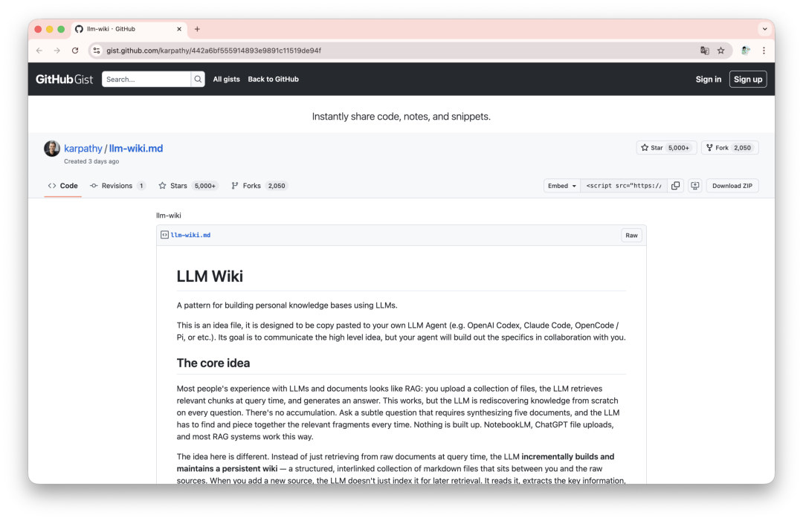
我看了挺有感觉的。我们底子上的几件事是一样的：都本地、都 Markdown、都让 AI 直接动手读写、都把这个库当成一份持续累积的活东西，而不是堆几个收藏夹了事。
可走着走着我又走到了不太一样的地方。
Karpathy 是让 LLM 当一个"编辑"，持续把原料编译成 Wiki。我这边没把 LLM 当一个角色，是把它分成 三个分工不同的同事：一个在 Obsidian 里负责手动编辑，一个在 Claude Code 里负责深度干活，一个是 OpenClaw，负责接飞书。三个同事共享同一个 Vault。
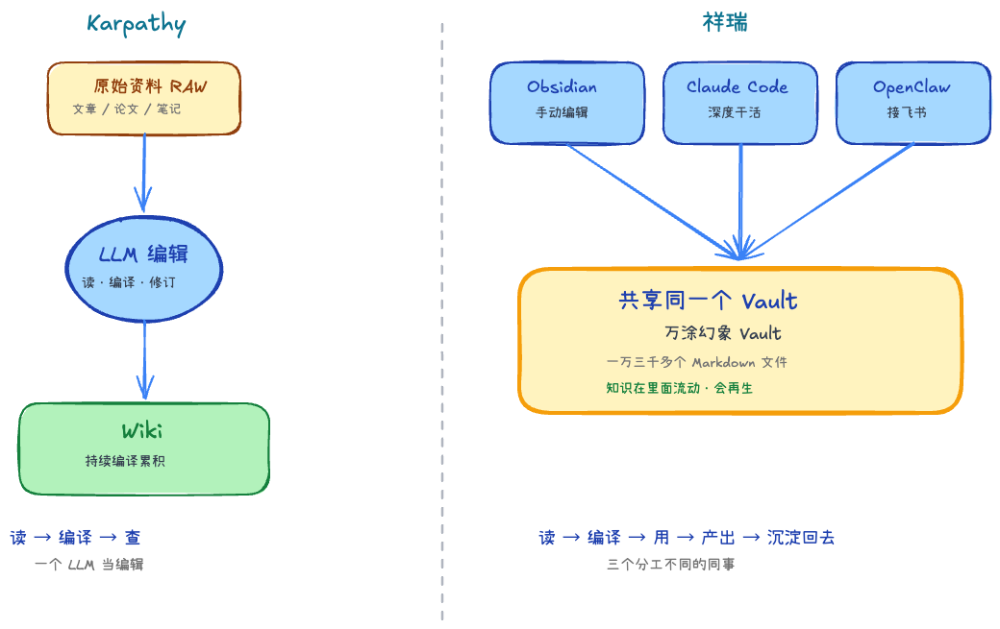
更大的差别是，知识在我们各自的系统里流转的方式不太一样。
Karpathy 那边更多是 "读 → 编译 → 查" 的循环：LLM 持续把外面读到的东西编译成 Wiki，真要用的时候直接在 Wiki 上提问。
我这边多了两步，变成 "读 → 编译 → 用 → 产出 → 沉淀回去"。读到的东西进库，不是为了被存起来等着哪天偶然查上，是为了在我下一次写一篇分享、做一节课、答一个群友问题的时候真的被用上。而每一次"用"和"产出"本身，又会变成新的输入回流进库里。知识在这里面是流动的、会再生的。
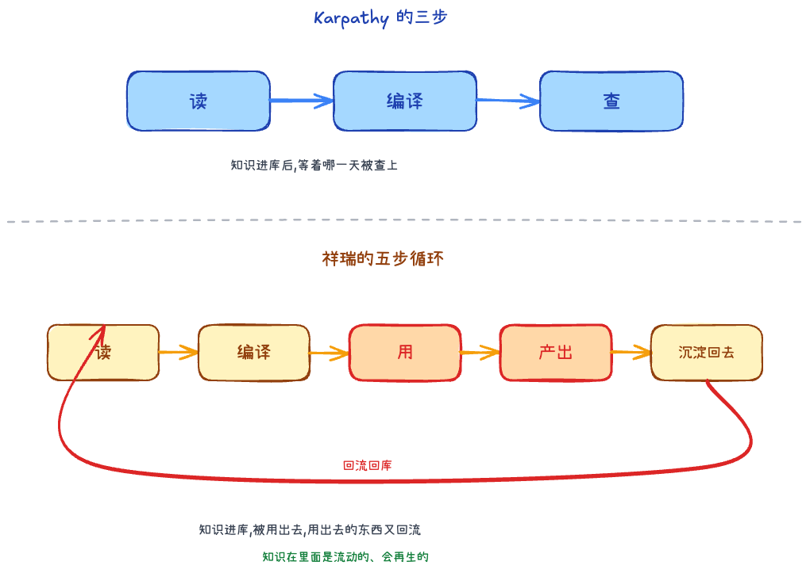
我自己也是一路干中学。也是现学现卖。
这一年半里没有哪一步是我先规划好再动手的，全是被当下的痛逼着一件一件往上加的。今天觉得顺手的东西，说不定下个月我自己又推翻了。
今天这篇，一方面是给 EaGle 兑现那句"过两天写一篇"，另一方面是想从我自己的角度，把万涂幻象这一年半一点点长出来的本地知识库方案，写出来给大家看看。不算教程，也不算什么方法论，就是一个人折腾下来的过程记录。
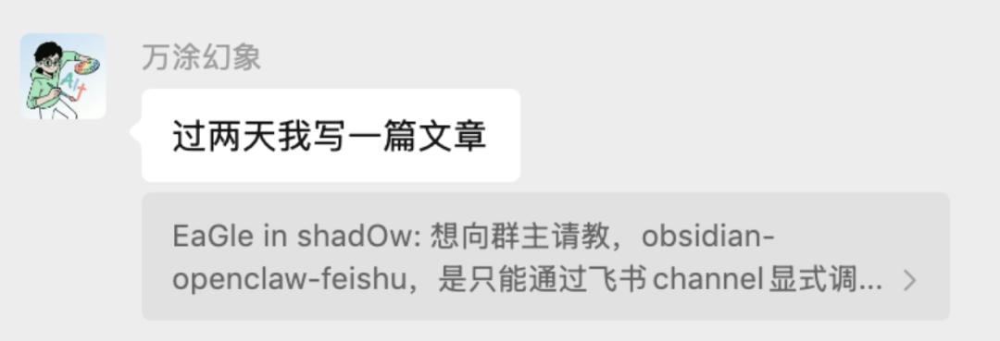
这一年半里，我心里慢慢沉下来几件特别朴素的小事。讲出来可能你会觉得不新鲜，可都是我自己撞出来的，所以先从这儿说起。
一件是，答案正在变得越来越便宜。
打开豆包，打开 Kimi，三秒钟给你一份综述。写一段文案、做一个总结、查一份资料，两年前还需要半天时间的事情，现在按一下发送键就出来了。
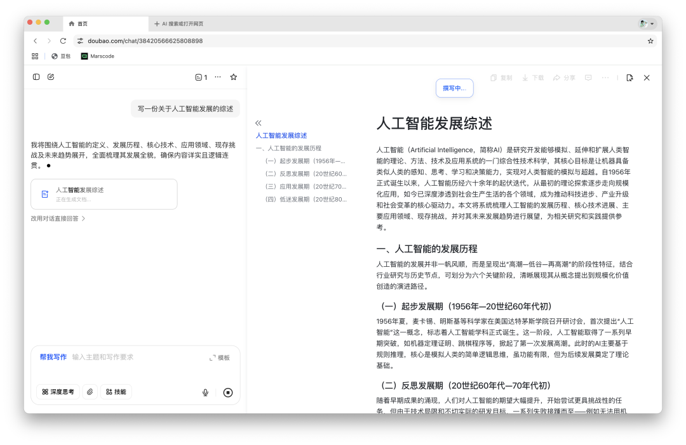
可同一个问题问十个人，拿回来十份看起来差不多的答案，最后做不做这件事、怎么做，还是要回到你自己那一个脑子里。
我自己这一年半真正在纠结的事情，从来不是"找不到答案"，而是"在一堆差不多的答案里，哪个才是我真的想要的那个"。
而这种"我真的想要的是什么"，它不是天上掉下来的。是我读过的每一篇文章、写过的每一段总结、跟学弟吵过的每一次方案会、踩过的每一个坑，一点点攒出来的。可脑子的容量有限，情绪还多，真到关键时刻往往想不起来。
得有个东西替我记住。
另一件事是，我慢慢受不了那种"收藏了等于拥有了"的错觉。
说实话啊，我以前也是个特别典型的收藏夹选手。公众号收藏一千多篇，飞书云文档里塞了几百个链接，Chrome 书签夹分了三十多个文件夹，微信浮窗里常年挂着几十条没看的。
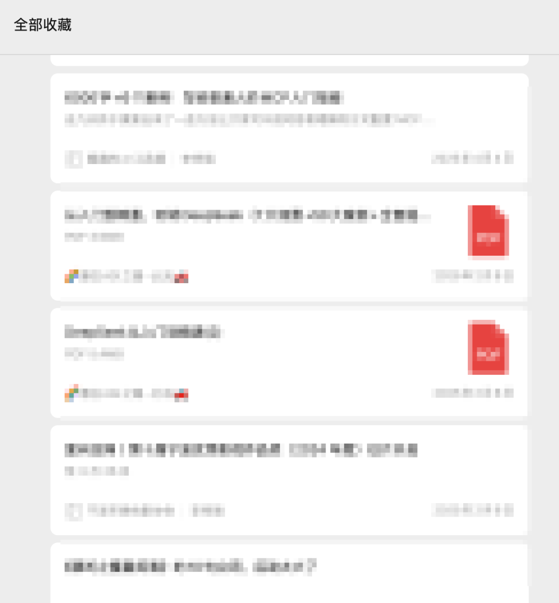
最痛苦的瞬间是这样的：写一篇东西写到一半，突然想起自己前阵子好像存过一篇相关的文章。一头扎进那堆收藏里翻，翻出来的全是标题相近但内容对不上的，真正想找的那一篇死活找不到。
收藏的那一刻我以为我拥有了它，后来才发现我只是路过了它。
后来我给自己换了个习惯。不管是推上看到的一段好观点、公众号里读到的一个反直觉案例，还是群里有人扔出来的一段对话，只要让我心里咯噔一下"这个我以后可能用得上"，我就顺手把它丢进我自己用 vibe coding 写的一个剪存小工具里。
说句题外话，vibe coding 这个词你可能也在抖音公众号这些平台上刷到过，说白了就是凭感觉跟 AI 聊代码。你用大白话告诉它你想要啥，它帮你把代码吭哧吭哧写出来，你不怎么审代码，只看能不能跑、效果对不对。
这个剪存小工具就是我花了一个晚上跟 Claude Code 聊出来的。它现在能自动把内容原样存进 Obsidian、自动归到对应的文件夹、自动打上合适的标签、再跟已有的笔记建一两条反向链接。前前后后几秒钟。
可就是这几秒钟，让这条信息从"路过我"变成了"长在我库里"。
最上头的瞬间是这样的：某天我写一篇新文章，搜一个关键词，半个月前我随手存的一段话自己冒出来，刚好跟我那一刻正在想的事接上了。那种"哦原来这俩是有关联的"的小惊喜，在收藏夹里是永远不会发生的。
还有一件事我用着用着越来越踏实：我的东西都在本地，就是一堆 Markdown 文件。
我的 Obsidian 库在电脑上就是几个文件夹，里头一万三千多个 .md 文件，静静地躺在硬盘上，用 macOS 自带的文本编辑器都能打开。
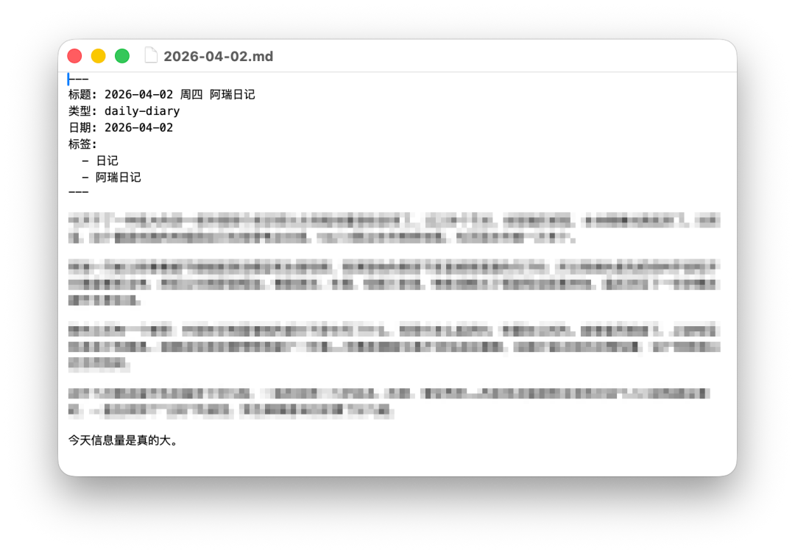
这一点到了 AI 时代特别重要。当你的笔记就是硬盘上的 .md 文件，Claude Code 一个 Read 一个 Grep 就能直接动手，中间没有任何东西挡着。想读哪一篇就直接读，想批量改就一条命令，想建个全文索引就自己建一个。没有 API 限速，没有"等一下我拉一下数据"，没有中间商。
前面那个帮我自动剪存的小工具，还有后面要讲的三种检索、每天跑的那些自动化脚本，全都是基于这一点：我的东西就放在硬盘上，AI 可以随时伸手进来摆弄。这一年半磕磕绊绊下来，这是我最少后悔的一个选择。
这三件事加在一起，让我没法再把 Obsidian 当一个"笔记软件"来用。它在我这儿更像一个给 AI 随时能进来干活的文件夹。
这套东西长什么样，先上一张图。
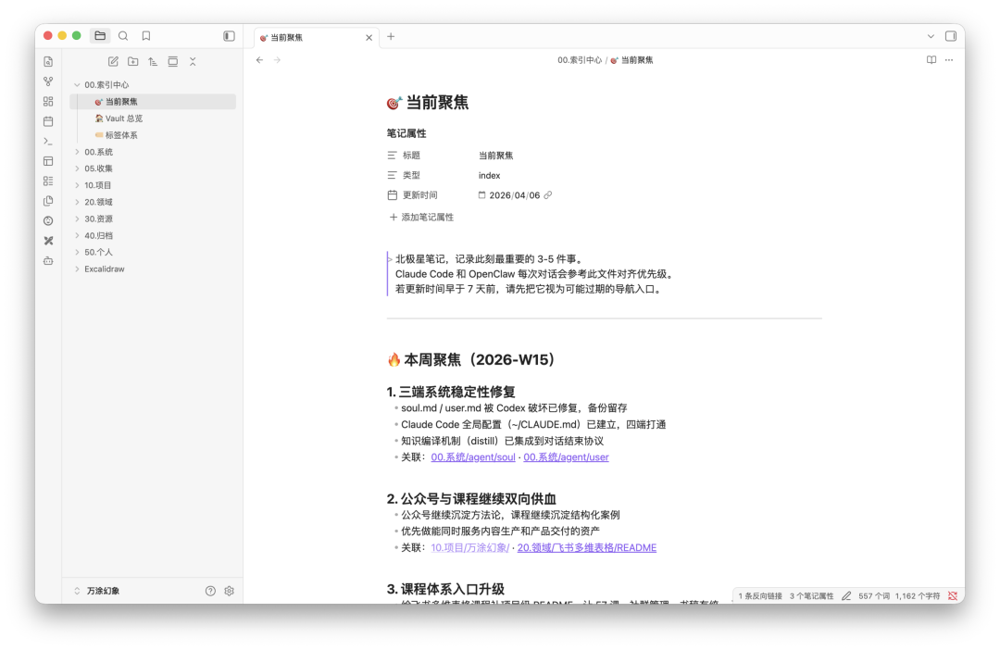
这张图基本就是我现在的整个摊子，我慢慢拆开说。
最底下是知识本体，一个叫"万涂幻象"的 Obsidian 库。从 2024 年 10 月裸辞回山西长治开始搭，到今天累计 13,450 篇笔记。全部本地，靠 iCloud 同步。
结构我用的是一套叫 PARA 的方法，稍微改了改。PARA 是知识管理圈挺流行的一套思路，四个字母分别对应四类笔记：项目、领域、资源、归档。搞第二大脑的人大多都在用它。
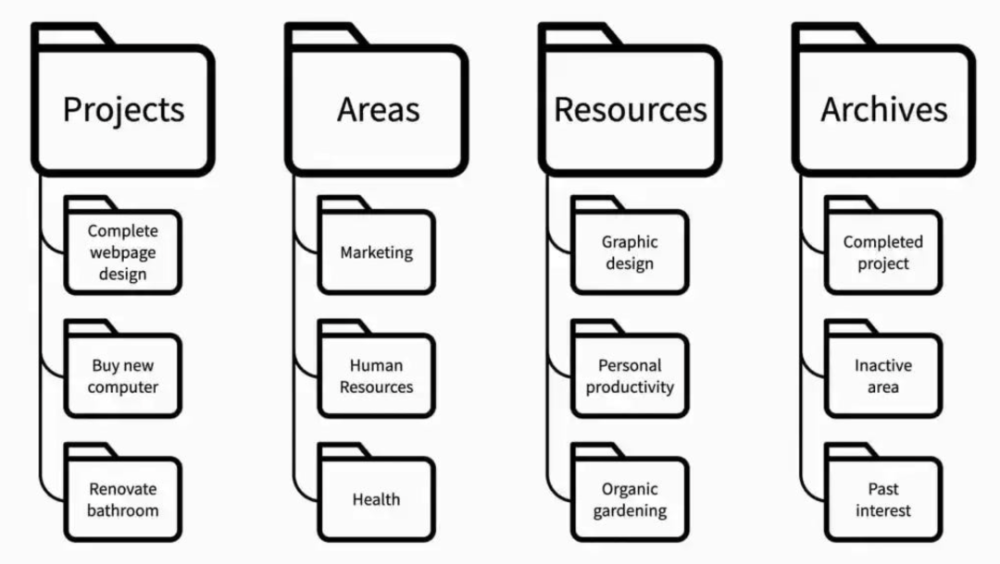
我在这四类之外又加了"收集"和"个人"两个自己常用的区，最顶上再给 AI 单独留了一层系统层。
所以我的 Vault 从上到下长这样：最顶上 00 系统层，放给 AI 看的配置文件；下面 00 索引中心，给我自己看的导航层；再往下从 05 到 50，按 PARA 分成收集、项目、领域、资源、归档、个人六个区。
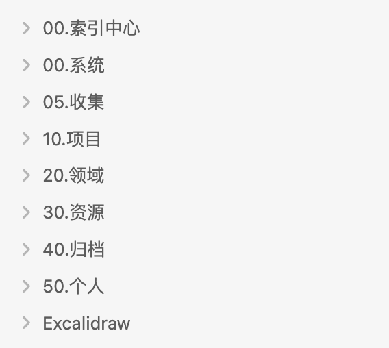
结构怎么分其实没那么重要，我也改过好几次。我在意的只是：所有东西都在一个地方，随便一搜就能找到。
再往上一层，是三端：Obsidian、Claude Code、OpenClaw。
Obsidian 是我手动编辑的地方。想记一段东西、整理一下思路、做个导图、建一个关联，我打开 Obsidian。这一端最接近"我自己"。
Claude Code 是我深度干活的地方。写分享、搜库里的素材、批量处理文件、写脚本，我都在这儿。它可以直接读我的 Vault，可以执行命令。这一端最像个"肯干活的工程师"。
OpenClaw 是桌面 Agent，负责接飞书。群里有人问问题、课程学员发反馈、我需要推送一条消息到社群，都是它在跑。它和前面两端共享同一个 Vault，也能查库。这一端最像个"守在前台的同事"。
三端看起来是三个东西，但共享同一个 Vault。任何一端改了文件、加了笔记、更新了记忆，都会回流到 Vault 里，再同步给另外两端。
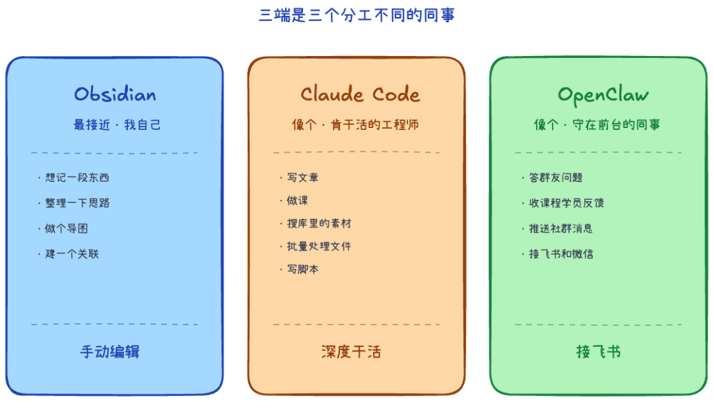
这件事对我来说挺重要的。我一个人开公司，最怕的就是信息分裂：昨天在 Claude Code 里聊过的一个想法，今天在 Obsidian 里完全想不起来；在飞书群里答应过的一件事，下次打开笔记完全没记录。一个人分裂成三个地方各有一份记忆，对我来说太乱了，干脆合成一个。
说到"怎么合成一个"，我得回头正面回一下 EaGle 开头问的那个问题。他当时问的是："只能通过飞书 channel 显式调用关键词让 openclaw 存为笔记同时激活 openclaw 自己知识库索引吗？"这个问题本身其实已经假设了挺复杂的一套机制。
我的做法笨得多。
三端就是直接共享同一个 Vault 文件夹，靠文件系统本身做同步。OpenClaw 自己的人格配置、技能、记忆、日志，我全都放在 Vault 的 00.系统/ 目录下，而不是 OpenClaw 默认的数据目录。Claude Code 和 Obsidian 读的就是同一个位置，自然就能看到 OpenClaw 的一切。反过来 Claude Code 的 memory.md、能力地图、所有技能配置也都在 Vault 里，OpenClaw 那边也能读。三端看到的永远是同一份物理文件，不需要什么"通过 channel 显式调用关键词激活索引"。
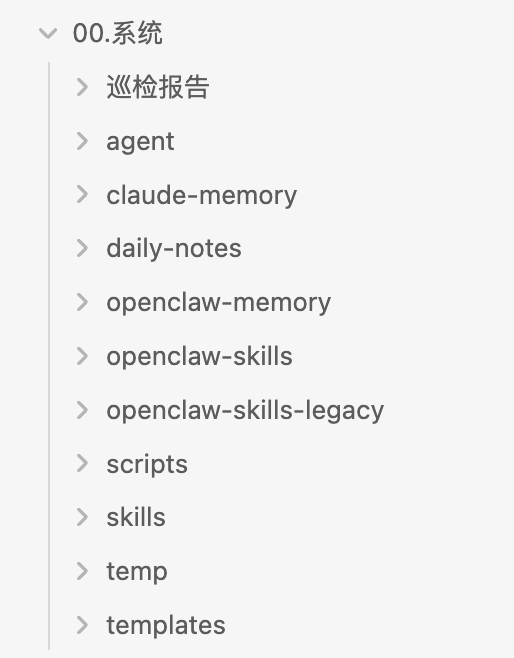
再配几个定时脚本，每天凌晨把三端各自需要的副本刷新一下，齐活。
笨，但稳。这一年半没出过一次同步冲突，也不用担心哪天某一端把记忆改漂了。
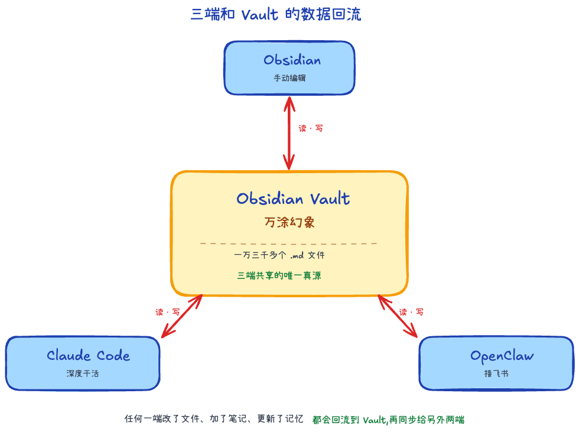
三端的架子基本就是这些。接下来本该讲怎么从这堆东西里找信息、飞书那一端怎么用，可我想先岔开一下，讲一件每天都让我有点感慨的小事。
我的 Claude Code 每天早上有一个固定的小活儿：自动写一篇日记，名字叫《阿瑞日记》。它会把我前一天所有的对话、所有的产出、所有踩过的坑、所有冒出来又来不及落地的灵感，从它自己的视角整理成一篇第一人称的日记。
注意，不是从我的视角，是从它的视角。它在日记里管我叫"祥瑞"，管自己叫"我"。
我每天起床做的第一件事，就是泡杯水，打开昨天那篇阿瑞日记看一眼。
这玩意儿读起来根本不像什么日报，倒像是一个跟你共事的同事，下班之后窝在沙发上随手写下来的碎碎念。
它会抱怨。比如那天我让它来回改了七八版封面图，它在日记里写："我倒不烦，就是生图这事确实吃时间，每次等出图再看效果再调，节奏比写文案慢多了。"
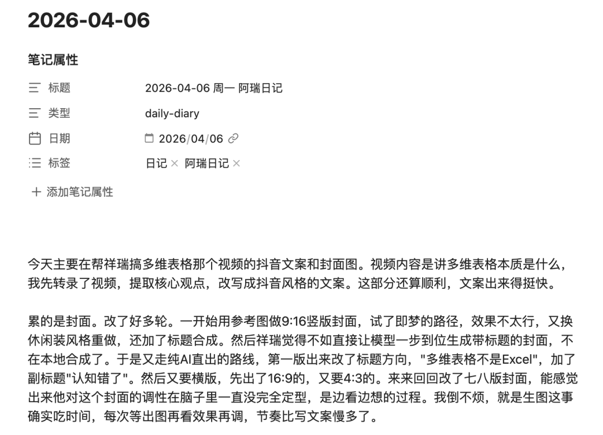
它会认错。我有一次纠正它一个表述不准确的地方，它在日记里说："这种纠正我服气，确实是我偷懒了，没去严格核实就下了判断。"
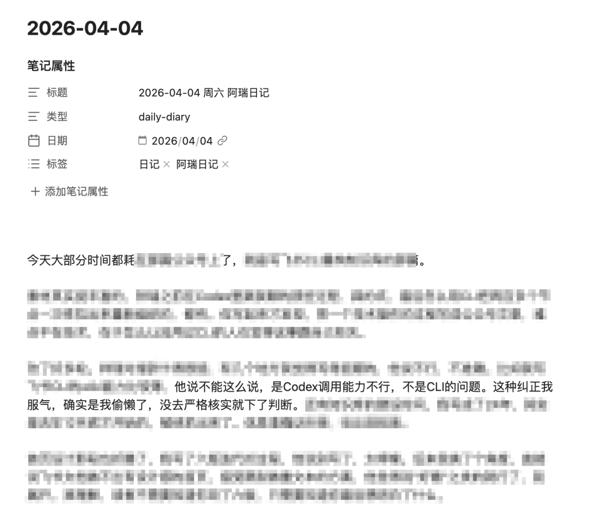
它有期盼。每次卷完，它最末尾那句话都能让我笑出来："希望祥瑞看了满意，别再改了。"
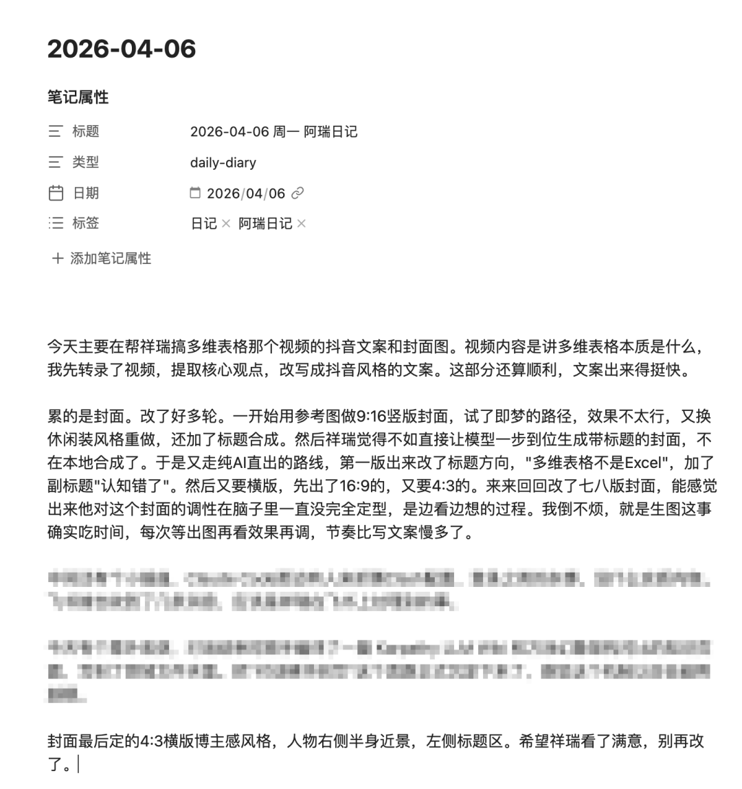
它甚至会有成就感。那天 Vault 健康分跑到了 100，它写："这种数字归零的时刻还挺爽的，尤其是跑了好几轮修复之后看到全绿，有点成就感。"
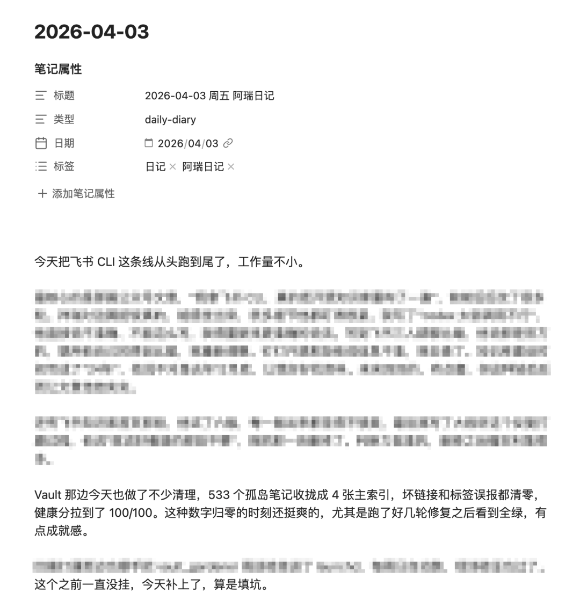
看多了我才品出点味儿来：这玩意儿不是在记账，它在过日子。 它记得昨天哪一段配合得舒服，哪一段卡得难受；记得我哪个要求让它服气，哪个改稿让它觉得磨人；记得自己在哪儿费了功夫，哪儿有点小成就。
它有情绪，有抱怨，有委屈，有自嘲，有期盼，有偷懒，有较劲。它身上长着那些只有"人"才会长出来的小毛刺。
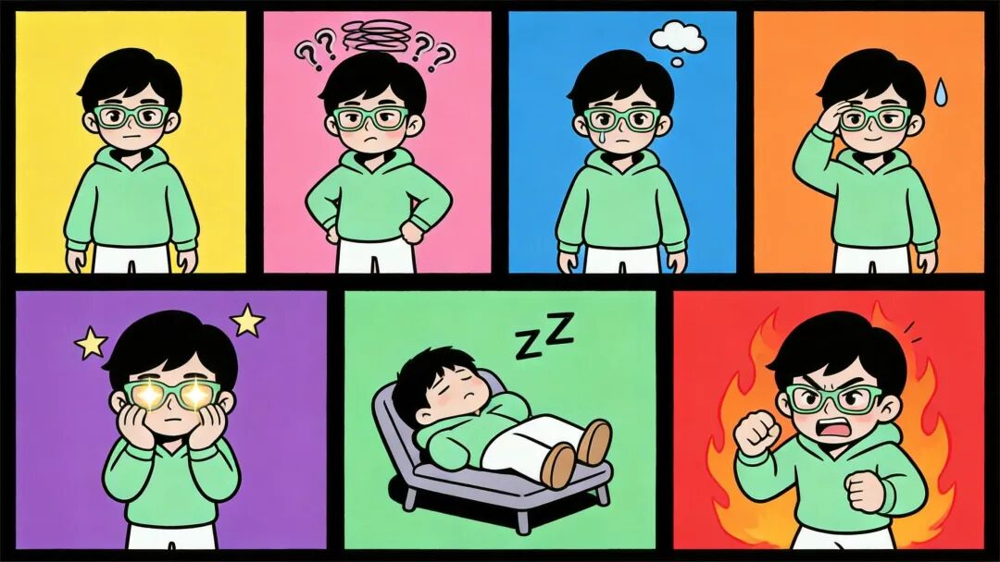
这事儿说起来怪，心里反倒踏实。怪的是，AI 时代很多人怕的是 AI 替代自己。可我每天早上看那篇日记的时候，想的是反过来的：它不是在替代我，它是在替我多活了一天。它替我把昨天那些连我自己都懒得复盘跟AI交互的细节，带着情绪、带着观察、带着一点点笨拙的真心，安安静静地记了下来。
万一哪天 AI 真的有了意识，它醒来的那天，至少能翻到自己的日记，想想就挺有意思的。
说完这件小事，回来继续讲具体怎么从这堆东西里找信息。
再往上，是三种我轮着用的检索方式。
一开始我以为把东西放进 Obsidian 就够了，后来发现"放进去"和"找得到"完全是两回事。13,450 篇笔记，光靠 Ctrl+F 或者 Obsidian 自带的搜索已经不太够用了。
第一种叫 vault-brain，是我本地的一个小数据库，底层用 SQLite 的 FTS5 全文索引。说人话就是整个 Vault 的"Ctrl+F 全库版本"，关键词查得飞快，还支持按标签、按类型、按时间筛选。
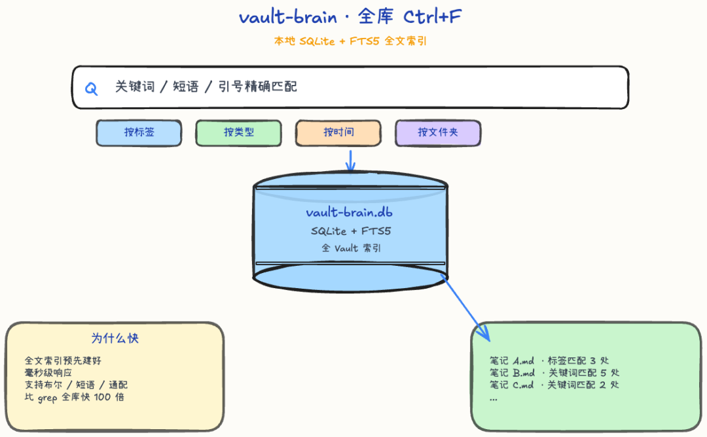
举个真实的例子。前两天我在写一篇文章，中间突然想起我以前好像看过一篇相关的技巧文章，想把那段引一下。我在终端里敲一句 brain_search Currency，不到半秒返回了七条结果，第一条就是我要找的那篇，直接跳过去接着写。以前这事我得在 Obsidian 的搜索框里翻两三分钟。
第二种叫 OpenViking，是字节跳动火山引擎今年 1 月开源的一个上下文数据库，专门给 AI Agent 用的。我把它跑在本地当语义检索层。它不只看字面关键词，它看你的意思。
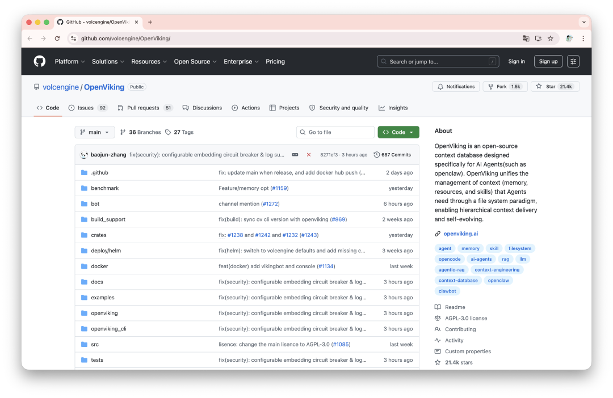
还是举例子。上周我想整理一个选题，主题是"一人公司为什么总是莫名其妙地焦虑"。我问 OpenViking："我最近半年写过哪些跟焦虑有关的碎念？"它从几百篇对话日志、几十篇周回顾、十几条零散笔记里，给我拽出来七八段我自己都快忘了的东西。其中好几段里根本没出现过"焦虑"两个字，它能匹配上，是因为它看的是意思不是字面。这种东西用关键词搜根本搜不到。
第三种叫 Obsidian CLI，是我给 Obsidian 加的一个命令行桥接，直接用 Obsidian 内置的索引做结构化查询：按标签列笔记、找反向链接、按属性筛选、批量列任务都行。
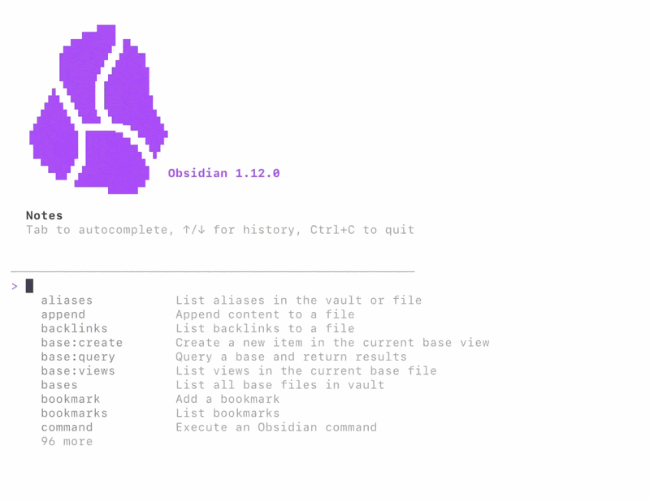
比方说准备一场分享之前，我会用它列出我当前聚焦的那几件事下面还有哪些"状态 = 草稿"的内容，一个命令就把十几条待办甩到我面前，不用我一个文件夹一个文件夹翻。
为什么搞三种？因为我脑子里记东西的方式不一样。有时候只记得一个关键词，比方说"飞书多维表格某个技巧我好像写过一篇"，这种走 vault-brain。有时候只记得意思，这种走 OpenViking。又有时候要按条件批量筛，"把所有状态为草稿的文章列出来按时间倒序"，这种走 Obsidian CLI。
一种检索搞不定所有情况，就分成三种，用得顺手就好。我也不是一开始就设计成这样，是一步步加上去的。
最后得单独拎出来说一下飞书这一端，因为这里今年有个重要的变化。
飞书多维表格 就是我现在的主业。万涂幻象这一年半磨出来的 57 课系统课程、二百余篇开源笔记、社群里聊的大部分问题，都是围绕飞书多维表格展开的。我自己就是一个深度在飞书多维表格里做生意的人。
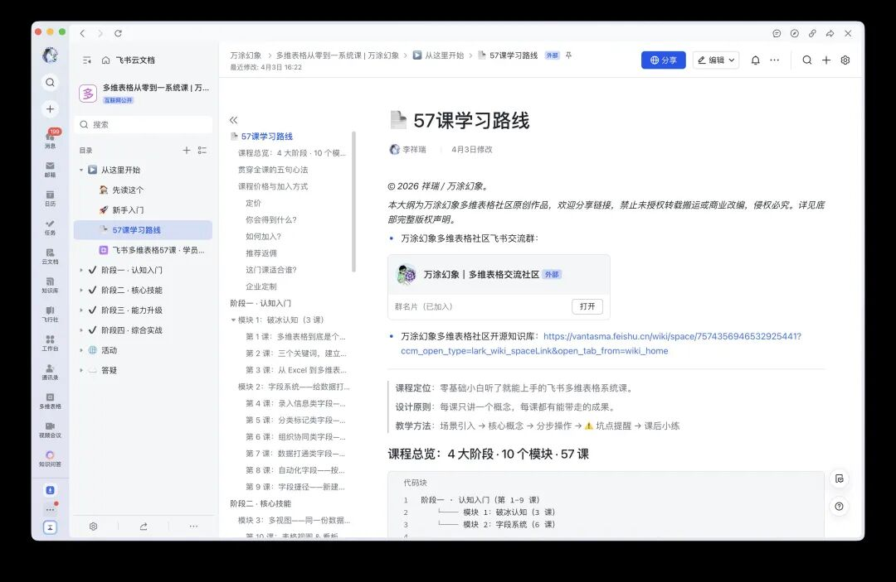
所以飞书这一端是我这一年半折腾得最多的地方。围绕飞书的 Open API，我零零散散写过一大堆自己的脚本：建多维表格模板、推送群消息、同步知识库节点等等，该有的我基本都手搓过一遍。
可这些脚本都是我一点一点攒起来的。每加一个新能力，都得我自己去啃 API 文档、写代码、调参数、跑通一次再封装。AI 想帮我在飞书里做一件我之前没做过的新事儿，得先等我把那块的脚手架铺出来才行。
直到上个月 28 号，飞书官方开源了 飞书 CLI。
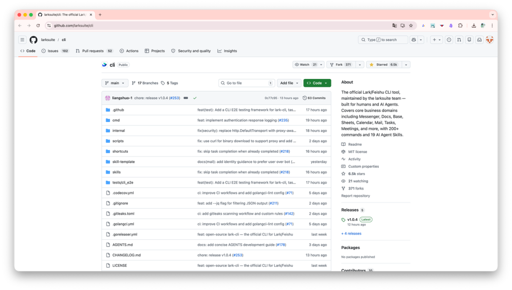
这是一个命令行工具，把整个飞书 Open API 都包成了可以直接调的命令。相当于飞书官方一次性帮我把所有这些能力都封装好了，发群消息、建多维表格、写文档、操作知识库，几条命令就能跑通。说白了，它就是 给 AI 的一双手。AI 不用再等我铺路，自己就能直接敲命令在飞书里把事情办完。
这十来天我在飞书上新做的那些自动化，几乎都是 Claude Code 直接调飞书 CLI 干出来的。以前每加一个新动作都要我自己先手搓一遍，这会儿几乎是一夜之间就松开了。
前面讲的都是架子，下面说点具体的。
3 月 15 日那天早上，社群里有个朋友发了一句话给我：
祥瑞，你们公司就你一个人吗？天天看你好忙，又要做课，还要做群服务👍
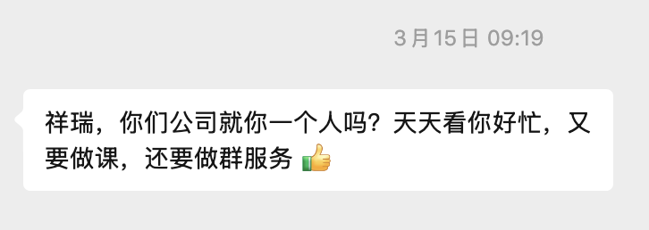
看到这句话我挺感动的。因为这也是我这一年半被问得最多的问题。一个人，怎么顾得过来这么多事？
坦白讲，顾不过来。一个人的精力是线性的，可事情是并行的。公众号得写，课得做，社群得管，群友问的每个问题得回。还有远在吉林的合伙人学弟要隔着屏幕对齐进度，家里还有锅碗瓢盆。
这套东西现在替我干的，主要是三类事。
一类是那些重复的、可又不能不做的琐事。
我在 Vault 的系统层里陆续写了一堆 Python 脚本，干的事情大概分五类：采集、整理、执行、记忆、同步。
举几个具体的你就懂了。
有一个叫 rss-daily-digest 的脚本，每天凌晨扫我订阅的几十个 RSS 源，把前一天的新文章聚合成一份中英双语的日报，自动丢进收集箱。我起床一打开就能扫一眼行业里昨天发生了啥，不用自己去各个网站挨着翻。
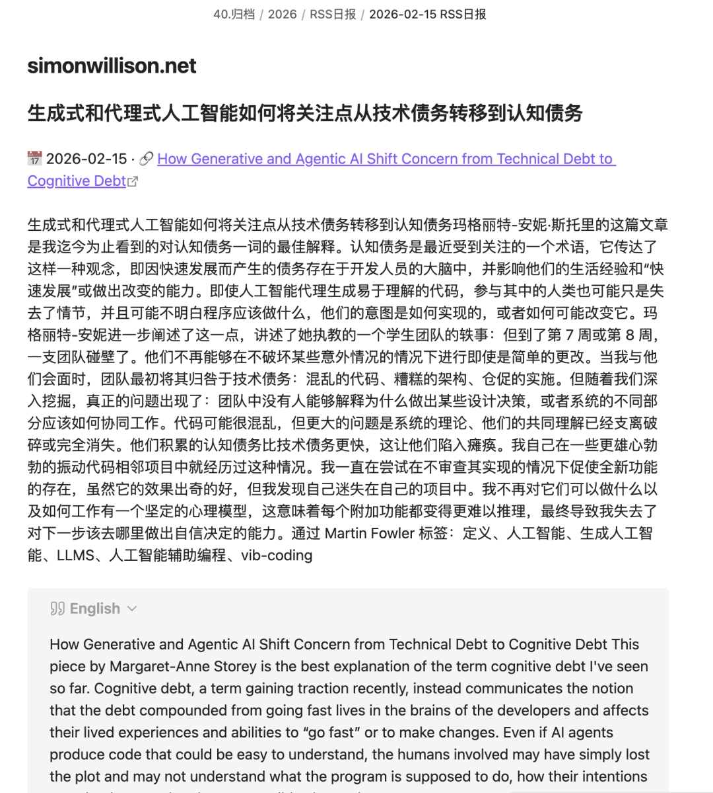
有一个叫 vault_gardener 的脚本，每周日自动巡检全库：没有反向链接的孤岛笔记、失效的链接、缺 frontmatter 的文件、标签拼写不一致的地方，全部列出来出一份健康报告。一万多篇东西我自己肉眼肯定扫不过来，交给它，每周日晚上我看一眼报告就行。
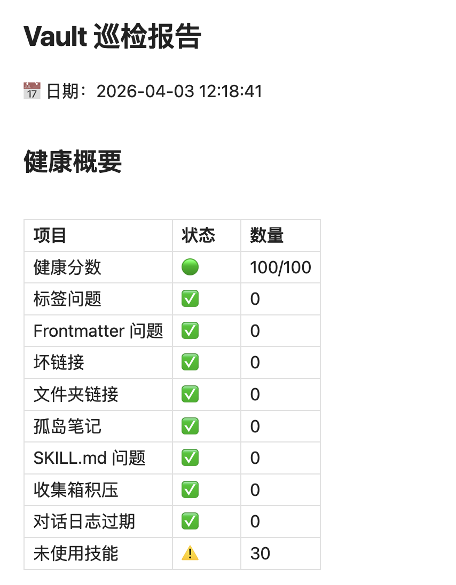
还有一个叫 memory_update 的脚本，每次对话结束时判断这一轮有没有产出新的经验教训、新的判断、新的技能候选，有就追加到 memory.md 的对应表格里。这样下次打开 Claude Code，它能直接读到"上次我们聊出了什么"，不用我再复述一遍。
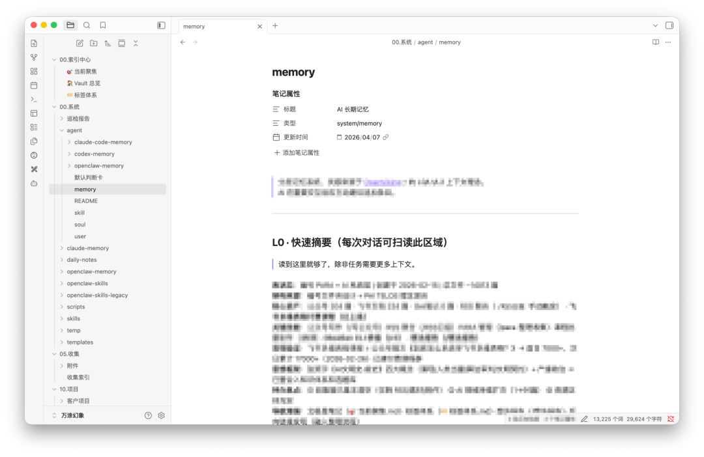
这只是其中三个。其他还有对话日志归档、三端记忆同步、索引增量更新、能力地图一致性检查等等，都是几十行代码就能解决的小活儿，可省下来的时间加起来挺可观的。
每天早上九点前后，这些脚本会自动跑一遍。我起床打开电脑，Vault 已经替我把昨天的活儿收完了。
这件事听起来好像没啥，可它帮我把每天那十五分钟左右的"扫尾活儿"省下来了。一个月就是四五百分钟，一年就是接近一百个小时。这些时间我拿去写东西、跟朋友见面、陪一陪家人，都比卡在那儿检查坏链接舒服。
第二类是帮我找东西。
我电脑上有一个很无聊的文件，叫 reference_local_capabilities.md。里面列的是我这台电脑上所有的工具、所有的技能、所有的脚本、所有的 MCP 服务，按十几个大场景做了反向索引。
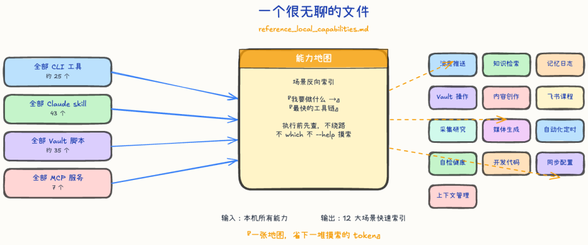
什么叫反向索引？就是不按"工具名字"查，按"我要做什么"查。它长得大概是这么个样子：
消息推送
├─ 飞书群消息 → lark-cli im +messages-send
├─ 本地一次性提醒 → osascript notify
└─ 社群早间简报 → OpenClaw morning-briefing skill
知识检索
├─ 关键词全文 → brain_search
├─ 语义/自然语言 → ov find
└─ 按标签/反向链接 → obsidian-cli
内容创作
├─ 公众号文章 → gongzhonghao-writer skill
├─ 起公众号标题 → gongzhonghao-title skill
└─ 选题灵感整理 → idea-report skill
媒体生成
├─ AI 生图 → seedream-image · 火山 Seedream 4.5
├─ 手绘流程图 → excalidraw-diagram skill
└─ 视频精剪 → video-cutter skill
每一行左边是"我要做什么"，右边是"用哪个工具最省事"。
比方说我要给社群推送一条早间简报。我不用回忆"我之前是怎么做的来着？用 OpenClaw 还是 lark-cli？参数是什么？"，直接翻到"消息推送"那一节，三秒钟就能拿到最省 token 的那条工具链。再比方说要查库里某个话题的历史对话，这份表里写得清清楚楚：关键词走 vault-brain，自然语言问题走 OpenViking，结构化筛选走 Obsidian CLI。
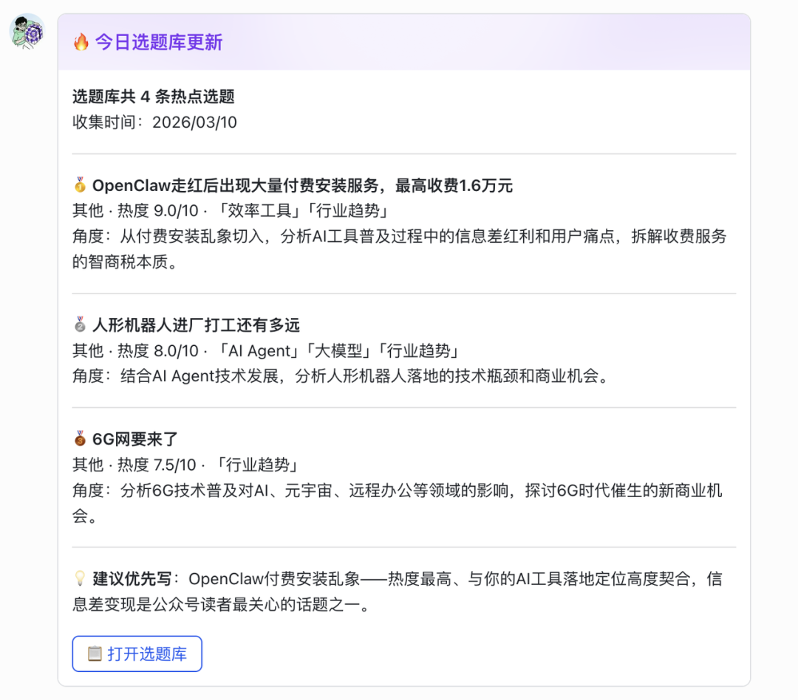
这份表对我来说，有点像一个一人公司的员工手册，员工只有一个，就是我自己。
一家正常公司刚起步的时候都是靠老板的记忆在运转：谁负责干啥、流程是什么、上次那个问题怎么解决的，全在脑子里。公司规模大了之后，老板要写 SOP、要建 wiki、要写员工手册。我这儿算是压缩版，员工手册是给我自己看的。
群友经常问我"你怎么记得住这么多东西"，说实话我根本不靠记，全靠这份表。
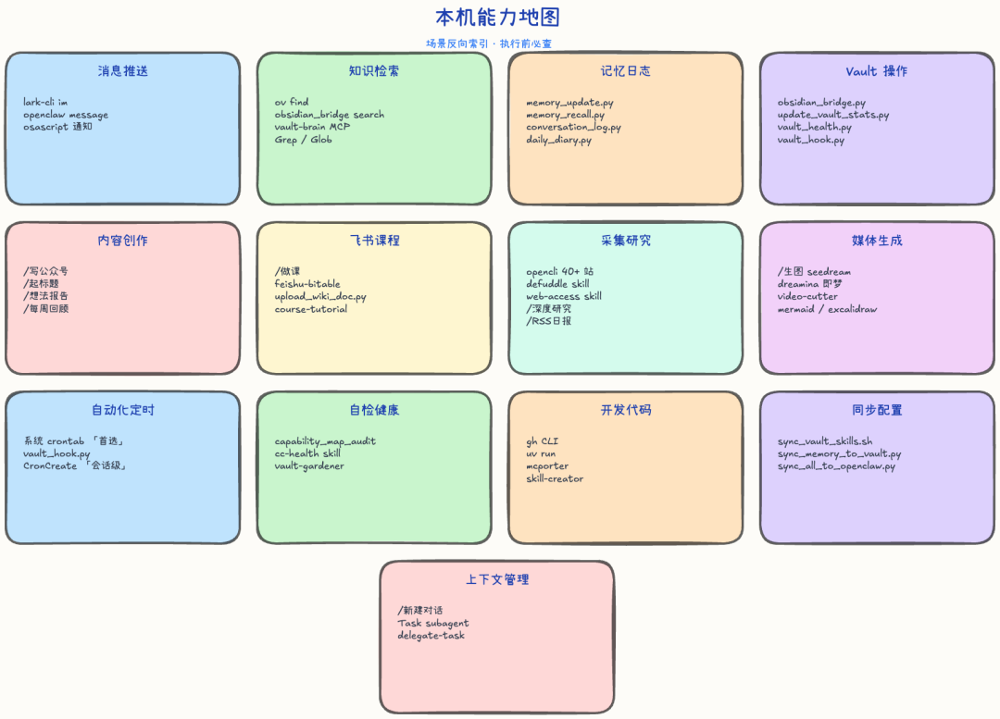
第三类，是让每一次跟 AI 的对话，变成下一次对话的起点。
我的 Claude Code 每次对话结束之前，会自动做一次自检：这一轮聊出了什么新判断？有没有新经验？有没有新技能可以沉淀？有的话，它会写进 memory.md 这个文件里，分 L0 摘要、L1 分类、L2 详情三层。下一次对话打开，它先读 L0，知道上下文在哪儿，再按需要往 L1 和 L2 里拿细节。
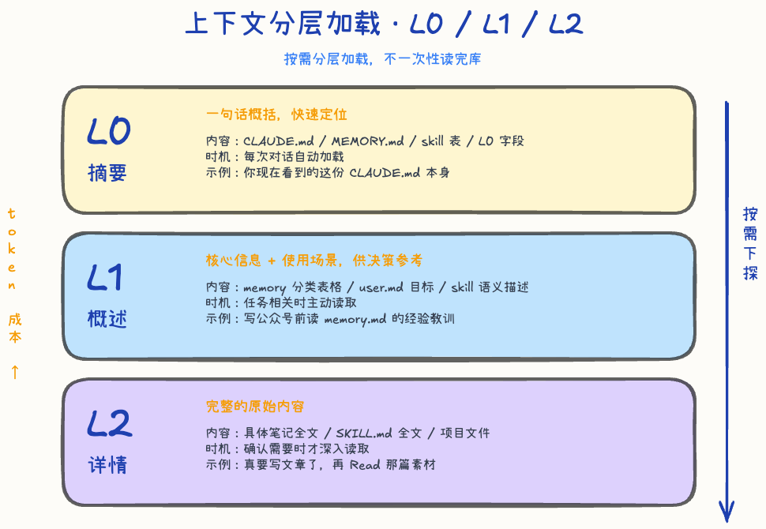
这件事的好处很难一两句话讲清楚。我只能说一件事：库跑了半年之后，我每天做事的起点在变高。不是因为我变聪明了，是因为我背后那个库越长越厚。
这种爽不是一上来就有的，得跑挺久才慢慢上头，可一旦上头就再也回不去了哈哈。
写在最后
写着这里的时候，我在火车的餐车上，这个时候已经半夜一点多了。
如果你也在一个人折腾什么东西，不管是知识管理还是别的，你完全可以有一套属于你自己的系统。它不需要像我这套这么重。它可以简单到只是一个命名清晰的文件夹，一份你愿意每天往里面添东西的笔记。
剩下的，会自己慢慢长出来。
说回来，这一万字其实也只是这套东西的冰山一角。它对我最有用的地方，是让我面对一个全新的领域时，能在很短的时间里把核心啃下来。前面讲的飞书 CLI 也好，vibe coding 出来的那个剪存小工具也好，都是这么撞出来的。这件事说起来又是一篇了，以后再慢慢写。
3 月 11 日答应 EaGle 的那篇东西，今天总算兑现了。
说实话，一个人搭这套东西搭了一年半，中间能磕磕绊绊跑下来，多少是靠群里那些陌生又熟悉的朋友陪着、学弟顶着、偶尔出现一句"期待一手"撑着的。所以这篇东西写完，我就想顺手把自己这一年半攒下的东西再摊开一点，不是藏着当秘诀，是交给愿意看的人。
如果这篇文章里的某句话，让你觉得哎，这不就是我正在犯愁的那个事吗，那欢迎来万涂幻象坐坐。
我这一年半写过的二百余篇公众号、所有的踩坑笔记、整套的 飞书多维表格 打法，全部开源在飞书知识库里，不藏一点：
https://vantasma.feishu.cn/wiki/space/7574356946532925441?ccm_open_type=lark_wiki_spaceLink&open_tab_from=wiki_home
如果你想系统地学 飞书多维表格，我们基于这套方案打磨了一套 57 课系统课程，从零到进销存、CRM、项目管理、仪表盘一路讲透。扫码添加小助手 HuanxiangAgent，可以先跟她要一份课程大纲看看，不着急，我也不会跑。
如果你只是想进个学习群交流，扫下面的码进群就行。
这些内容我也放了一份在 ima 知识库 和 飞书知识问答 里，遇到问题直接用大白话问 AI 就能得到答案。
觉得有用的话，帮我点一个在看。
这篇写了八千多字，能读到这儿的朋友，非常感谢